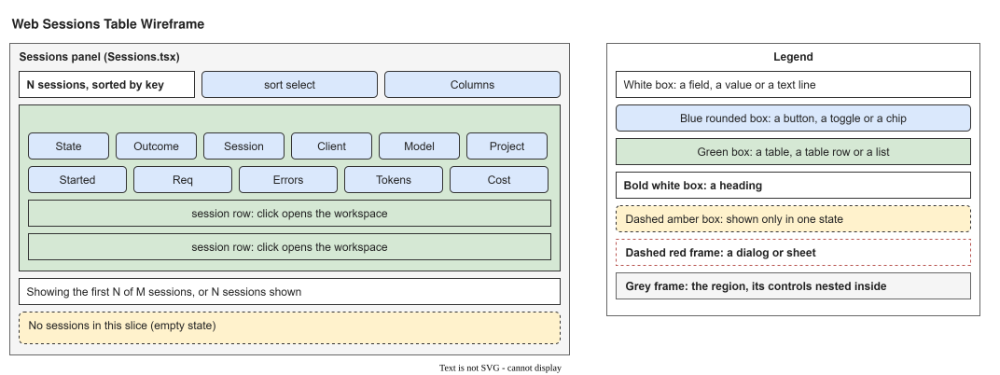

active approved inferred covers web/src/*, web/src/design-system/*
Web Sessions Table Wireframe
This wireframe shows the table a reader uses to find one session. It names every column and shows that each header sorts and each row opens the session. It also shows the line that warns when not all sessions are listed.
What the diagram shows
- The header holds the title, the sort select and the column chooser
web/src/Sessions.tsx:281-290. - The columns are state, outcome, session, client, model, project, started, requests, errors, tokens and cost
web/src/Sessions.tsx:124-124web/src/Sessions.tsx:212-212. - Each header is a sort button and each row opens the workspace
web/src/Sessions.tsx:338-345web/src/Sessions.tsx:354-354. - A note under the table says how many rows are shown
web/src/Sessions.tsx:374-378. - An empty slice shows an empty state instead of the table
web/src/Sessions.tsx:298-302.
Capability and related functionality
The table's states are in Web Sessions Table State Chart, and it sits on Sessions Screen. The row limit is a rule in Web Specification.
Web Sessions Table Wireframe

Code references
| Code | What it shows |
|---|---|
web/src/Sessions.tsx:281-290 |
The header holds the title, the sort select and the column chooser |
web/src/Sessions.tsx:124-124 |
The columns are state, outcome, session, client, model, project, started, requests, errors, tokens and cost |
web/src/Sessions.tsx:212-212 |
The columns are state, outcome, session, client, model, project, started, requests, errors, tokens and cost |
web/src/Sessions.tsx:338-345 |
Each header is a sort button and each row opens the workspace |
web/src/Sessions.tsx:354-354 |
Each header is a sort button and each row opens the workspace |
web/src/Sessions.tsx:374-378 |
A note under the table says how many rows are shown |
web/src/Sessions.tsx:298-302 |
An empty slice shows an empty state instead of the table |